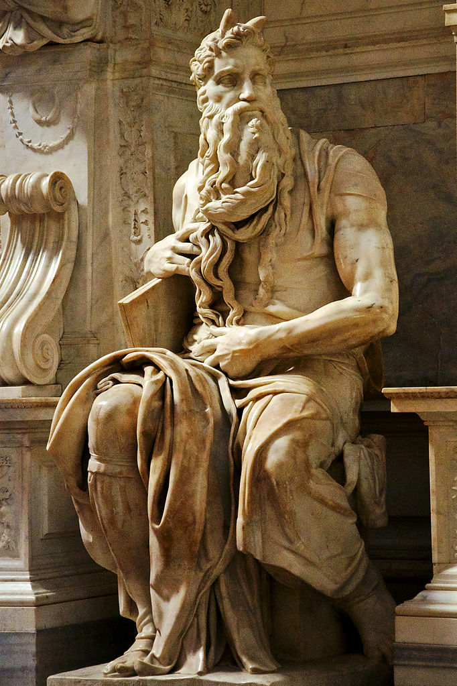
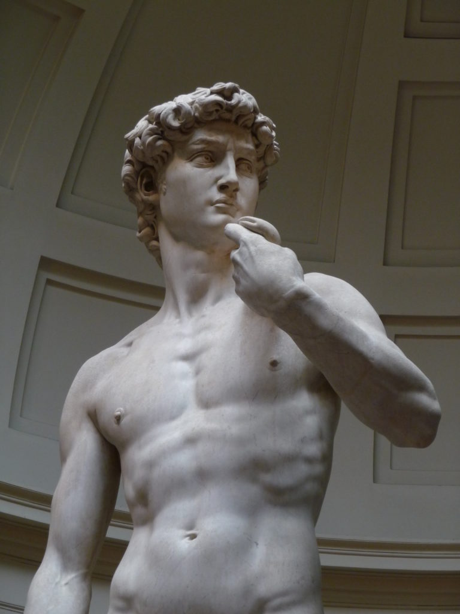
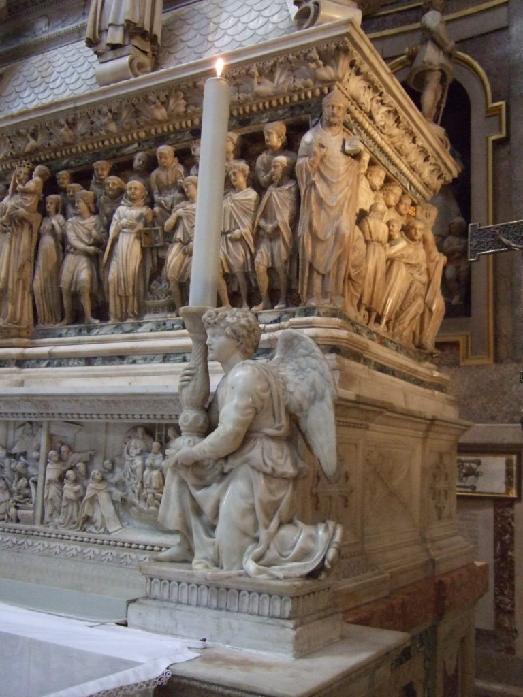

Moses
Michelangelo’s Moses came on the heels of his David, the public success of which had put him on Pope Julius’s radar. Commissioned in 1505 by the pope for his tomb, the work represents a specific moment from the biblical tale of Moses, when he sees his people have started worshiping a pagan icon—the Golden Calf—just after he had trekked all the way down Mount Sinai with heavy stone slabs bearing the Ten Commandments. Needless to say, Moses was pissed, and it’s precisely this anger that Michelangelo skillfully embodies in his eight-foot seated sculpture. Moses isn’t just sitting down, though. His left leg and hips shift left while his muscular torso faces the right, imbuing the figure with tension and power; although he looks left, his beard whips right, indicating swift movement.
Pieta

During the 15th century, the theme of Mary cradling Jesus once he was taken down from the cross—other wise known as a pietà—was commonly depicted in Northern European art but less so in Italy. So when a French cardinal approached 23-year-old Michelangelo to sculpt one for his funeral monument, the artist gladly accepted the challenge, knowing he could make his mark. It’s the Pietà that made people make note of Michelangelo’s name—quite literally, as Vasari describes: "…in truth, it is absolutely astonishing that the hand of an artist could have properly executed something so sublime and admirable in a brief time, and clearly it is a miracle that a stone, formless in the beginning, could ever have been brought to the state of perfection which Nature habitually struggles to create in the flesh. Michelangelo placed so much love and labour in this work that on it (something he did in no other work) he left his name written across a sash which girds Our Lady’s breast."
David
The artist was just 26 when he sculpted David. Even at the time it brought him to the heights of artistic fame for its sheer bravura. Standing at more than 13 feet tall, the work was sculpted from a piece of marble that another artist had started carving into for another project but then abandoned because the stone was structurally compromised. This didn’t deter Michelangelo, though, who knew he had the skills to make the marble work for him. “To be sure, anyone who sees this statue need not be concerned with seeing any other piece of sculpture done in our times or in any other period by any other artist,” Vasari wrote in the Lives of the Artists, making Michelangelo the central character in his ur-art history book, the most vaunted figure of the Renaissance. The David is different than any sculpture that came before. It is drawn from the well-known Biblical story of a young boy fighting the giant Goliath. But while others chose to emphasize his smallness, Michelangelo’s David is a giant himself: A muscular, confident man prepared for battle. The amazing thing, then and now, about Michelangelo’s David is that the work is both literally a depiction of a larger-than-life hero, and the quintessential depiction of the plucky little guy.
Angel
This kneeling angel holding a candlestick, measuring just about a foot and a half in height, is one of Michelangelo’s earliest works. It was created for the Arca di San Domenico in Bologna as a companion piece to the artist Niccolo dell’ Arca’s preexisting angel, integrated within the building’s design scheme. It’s historically important since it was with this work that Michelangelo started to exhibit his signature style: while dell’ Arca’s angel is soft and effeminate, demure in its loving embrace of its candlestick, Michelangelo’s depicts a strong youth with defined musculature and eagle-like wings.